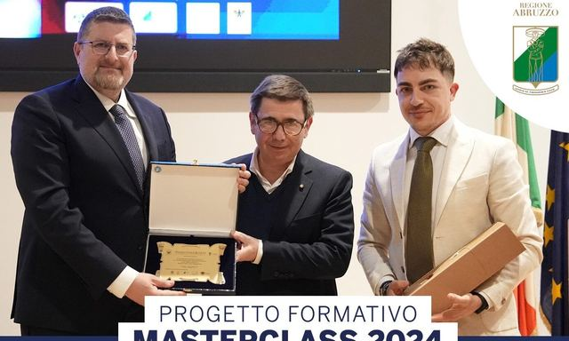
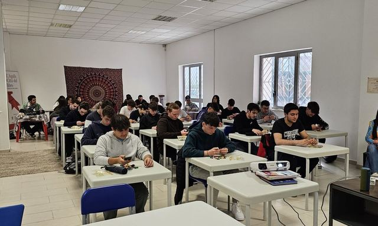
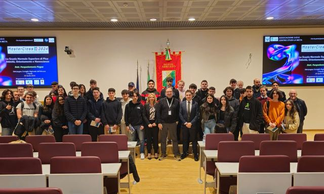
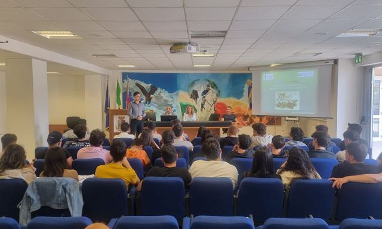
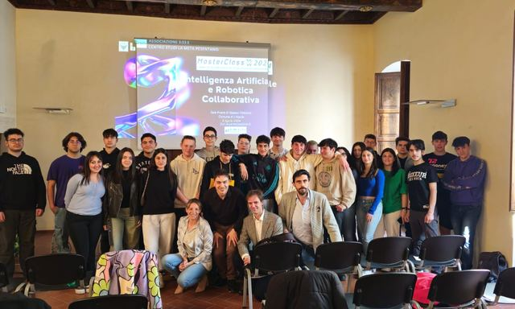
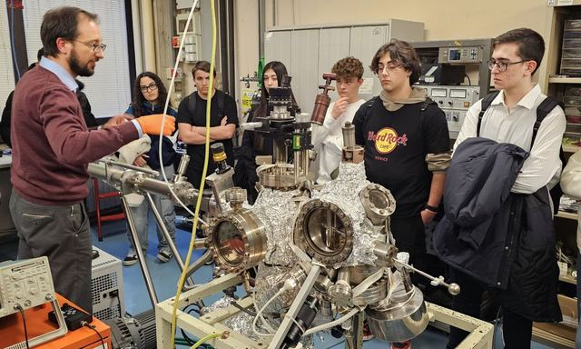
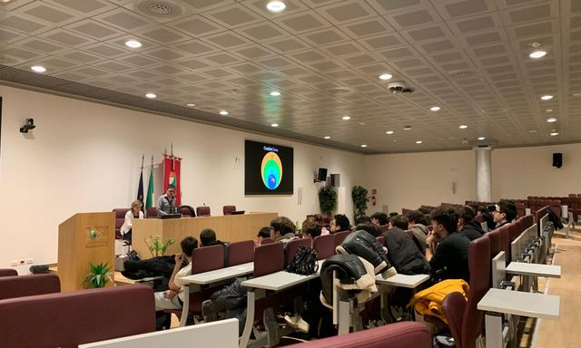
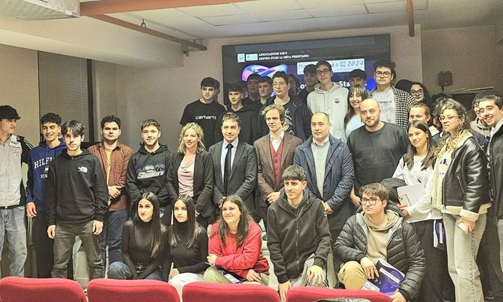
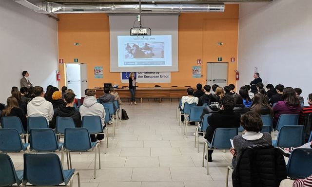
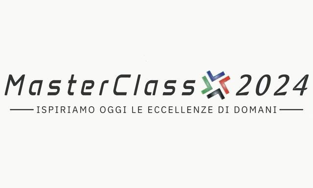

Articoli nella categoria: Masterclass 2024
10 articoli

Masterclass 2024 – Seminario conclusivo e premiazione
Desidero ringraziare personalmente tutti gli studenti, i partecipanti, La preside M. Chiara Marola, l’Ass. Roberto Santangelo, Il Dir. Gen. Arta Abruzzo Maurizio Dionisio, il Dir. Gen. USRA Abruzzo…

Masterclass 2024 – Sesto seminario
Sabato 4 maggio, il Centro Studi La Meta a L’Aquila ha ospitato il sesto seminario del programma formativo MasterClass 2024, un’iniziativa promossa dall’Associazione Culturale Residenti nei Centri Storici 3:33…

Masteclass 2024 – Quinto seminario
Sabato 20 aprile, L’Aquila è stata teatro del primo evento in Abruzzo interamente dedicato alla Scuola Normale Superiore di Pisa, promosso e organizzato dall’Associazione Culturale Residenti nei Centri Storici…

Masterclass 2024 – Quarto seminario
Sabato 13 aprile si è svolto, presso la Questura dell’Aquila, il quarto incontro di MasterClass 2024, programma formativo promosso e coordinato dalle associazioni culturali Residenti nei Centri Storici “3:33”…

Masterclass 2024 – Terzo seminario
In occasione del quindicesimo anniversario del terremoto che ha colpito L’Aquila, si è tenuto presso la Sala Rivera di Palazzo Fibbioni il terzo seminario del programma MasterClass 2024 organizzato dal Centro…

Masterclass 2024 – Secondo seminario
Il secondo seminario del programma MasterClass 2024, ospitato ieri dall’Università degli Studi dell’Aquila, ha segnato un altro significativo passo avanti nella missione di promuovere e divulgare l’eccellenza…

Masterclass 2024 – Primo seminario
Con la realizzazione del primo dei sette seminari tenutosi sabato 16 marzo all’Emiciclo, parte ufficialmente la fase formativa del progetto MasterClass 2024. Il seminario inaugurale, intitolato “Esplorando…

Masterclass 2024 – Conferenza stampa e presentazione del corso
L’Associazione Culturale Residenti nei Centri Storici “3:33” e il Centro Studi La Meta annunciano con grande soddisfazione l’eccezionale risposta alla seconda edizione del progetto MasterClass, testimoniata da…

Masterclass 2024 – Presentazione ITIS
La seconda edizione di MasterClass 2024 è stata brillantemente introdotta all’Istituto d’Istruzione Superiore Amedeo di Savoia Duca D’Aosta. Il progetto MasterClass 2024, ulteriormente arricchito rispetto alla…

Masterclass 2024
Benvenuti alla Masterclass 2024, un’iniziativa esclusiva dell’Associazione Culturale per i Centri Storici 3:33, dedicata a trasformare il panorama educativo di L’Aquila. Questo programma unico si immerge nel…